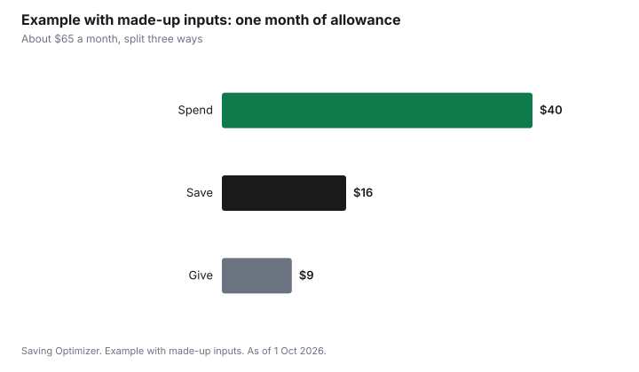

Kids · Canada
Allowance in Canada: Setting an Amount, Chores and Teaching Kids to Budget

There is no official allowance amount in Canada. The useful way to set one is to decide what the allowance has to cover, then price those things. A young child's allowance might cover treats and small toys. A teen's might cover transit, a phone top-up and some clothing. The amount follows the list. Decide whether chores earn the money or are simply part of family life, split each payment into spend, save and give, and widen what it covers as your child gets older.
Key takeaways
- Start with what the allowance covers, not with a number. Price the list.
- Pay on a fixed day, the same amount, so it can be planned.
- Chores: tie some pay to extra jobs, or keep chores and allowance separate. Pick one and explain it.
- Split each payment: spend, save and give. A savings goal with a date makes saving concrete.
- Example with made-up inputs: a 12-year-old's $15 a week covers $40 of monthly spending and builds $16 a month of savings.
Decide what it covers
An allowance teaches budgeting only if the child makes real choices with it. List the things the child currently asks you to buy that they could manage: treats, a magazine, an app purchase, a gift for a friend's birthday party. For a teen, add bus fare, a phone top-up, or part of the clothing budget. Price the list for a typical month. That is the spending part of the allowance.
| Stage | What it might cover | Skill it builds |
|---|---|---|
| Early school years | Treats, small toys | Waiting and choosing |
| Pre-teen | Activities with friends, app purchases, gifts | Planning a month |
| Teen | Transit, phone top-up, part of clothing | Running a real budget |
Chores: earned or expected?
Families split three ways. Some tie the whole allowance to chores, which links work and pay but can turn every task into a negotiation. Some keep allowance and chores separate: chores are part of living in the house, and the allowance is a budgeting tool. Many do both, with a base allowance and paid extra jobs such as washing the car. Choose one and explain it before the first payment.
Spend, save, give
Split each payment into three jars or three accounts. Spend is for now. Save is for a goal with a price and a date, such as a game or a bike. Give is for a cause the child picks. The split can change with age; what matters is that saving happens first, on payday. A youth bank account makes the save jar real; the youth bank accounts guide covers no-cost options.
Rules that make it work
- Pay on the same day each week or two weeks.
- Do not top up when the money runs out. Running short is the lesson.
- Let small mistakes happen. A bad purchase at 9 costs less than one at 19.
- Review the amount once a year, when what it covers changes.
- Talk about advertising and in-app purchases. The kids' app subscriptions guide helps.
The Financial Consumer Agency of Canada publishes resources on teaching children about money by age. They are a free starting point for the conversation.
Step by step: starting an allowance
- List what the child will now pay for with their own money, and agree on it together.
- Price the list for a month, then divide into a weekly or biweekly amount.
- Decide the chores rule: earned, separate, or a mix with paid extra jobs.
- Choose the payday and how you will pay: cash, a jar system or a youth bank account.
- Agree on the spend, save and give split.
- Set a savings goal with a price and date.
- Review every few months and when the child takes on new costs, such as a phone or transit.
Allowance by age stage
| Stage | Payment method | Money skills to practise |
|---|---|---|
| Early school years | Cash and clear jars | Counting, waiting for something, choosing between two things |
| Pre-teen | Cash plus a youth bank account | Saving for a goal over weeks, comparing prices |
| Teen | Youth account and debit card | Budgeting for transit, a phone or clothes; tracking spending in an app |
| Older teen with a job | Own account; allowance may shrink | Pay stubs, taxes, TFSA at 18, saving for big goals |
Talking about money mistakes
An allowance works best when children can make small mistakes: buying something they regret, running out before payday, or spending the savings. Let the consequence stand, and talk about what they would do differently. Topping up after every mistake removes the lesson. FCAC's resources for parents offer age-based conversation ideas, including talking about advertising, in-app purchases and online scams.
Common mistakes
- Choosing an amount without deciding what it covers.
- Paying irregularly, which makes planning impossible.
- Paying extra whenever the child asks, so the budget has no limit.
- Using the allowance as punishment, which mixes discipline with money skills.
- Never raising it as responsibilities grow.
Example with made-up inputs: a 12-year-old's allowance
These numbers are an example with made-up inputs, not a recommended amount. A 12-year-old's list covers $40 a month of treats, outings and app purchases. The parent pays $15 a week, about $65 a month. The child splits it: $40 spend, $16 save and $9 give. The $16 a month reaches a made-up $96 goal in six months.
| Jar | Monthly amount |
|---|---|
| Spend | $40 |
| Save | $16 |
| Give | $9 |
| Total (about $15 a week) | $65 |

Sources
- Financial Consumer Agency of Canada, resources on teaching children about money, as of 1 Oct 2026.
- FCAC, Low-cost and no-cost accounts, as of 1 Oct 2026. No-cost accounts for youth 18 or under.
- Financial Consumer Agency of Canada, resources for teaching children about money, as of 1 Oct 2026.
- No official allowance amount exists in Canada. Every amount in the example table and chart is a made-up input.
Frequently asked questions
How much allowance should a child get in Canada?
There is no official amount. List what the allowance must cover, such as treats, outings or, for teens, transit and a phone top-up, and price that list for a month. The amount follows the list and your household budget.
Should allowance be tied to chores?
Families choose differently. Some tie pay to chores, some keep chores as part of family life and use allowance as a budgeting tool, and some pay a base amount plus extra jobs. Pick one approach and explain it.
What is the spend, save, give method?
Each payment is split into three jars or accounts: spend for now, save for a goal with a price and date, and give for a cause the child chooses. Saving first, on payday, builds the habit.
At what age should kids get an allowance?
When a child can understand that money is limited and make simple choices, often in the early school years. Start small and widen what the allowance covers as they get older.
Should I give more when my child runs out of allowance?
Generally no. Running short and waiting for the next payday is the lesson. Review the amount once a year, when what it covers changes.
What should a teen's allowance cover?
Whatever you agree on: often transit, a phone top-up, some clothing, outings and gifts. Price the list and set the amount from it.
Should I top up when my child runs out?
Usually not. Letting a small shortfall stand teaches planning. Talk about what they might do differently next time.
Researched and drafted with AI assistance and fact-checked against official Canadian sources. How we create content.
Disclosure: Allowance apps and bank accounts are described as offer types; none is named or ranked. Saving Optimizer may earn a commission if a partner link is added later; no partnership is claimed. Education only.